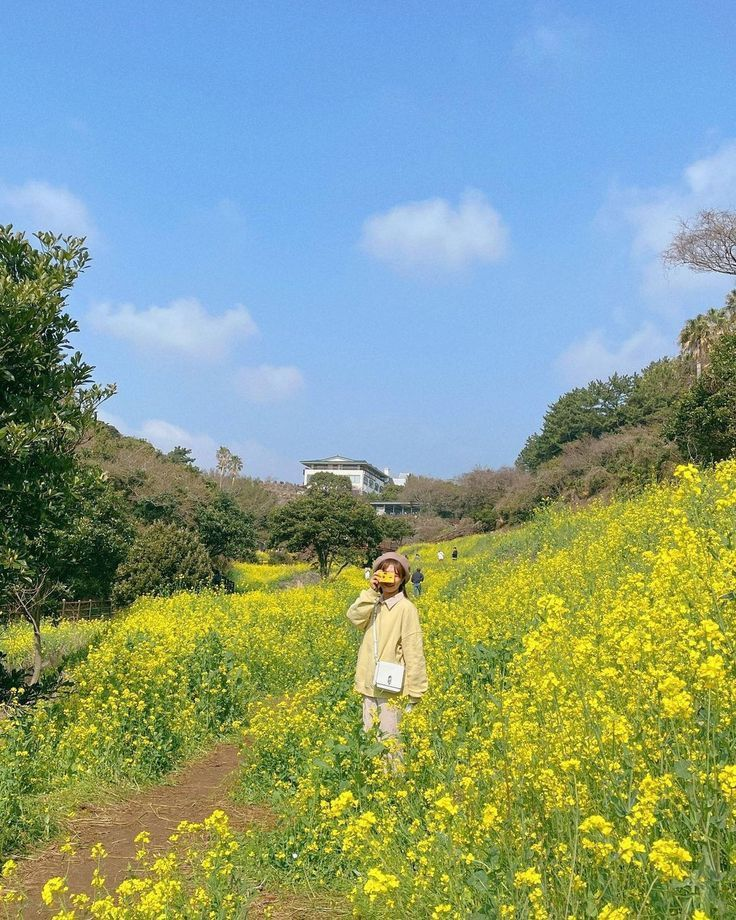
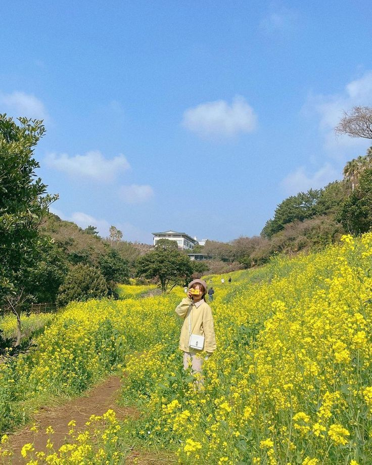

In Travels
5 days in Jeju, South Korea - A Road Trip Itenerary
20 April 2017
By dummy
Jeju Island has a lot going for it.The island's beauty literally came out of chaos. It was created two million years ago from volcanic eruptions that formed craters, caves, and cliffs that are unlike anywhere else in the world, creating an island with a slew of spectacular landscapes. Jeju also enjoys a subtropical climate, which means you get to enjoy warm and bright summers, clear and snowy winters, and a magnificent burst of colors during spring and autumn. Every season gives Jeju a different vibe, which will have you planning your next trip even before you leave the island.Swimming, hiking, eating, road-tripping there's a lot to see and do on this island. It was definitely a challenge to fit the best of it all into a 5-day road trip, but if you enjoy the same things I do a scenic road trip, gorgeous views, lazy beach days, pleasant hikes, and delicious food, you'll find this itinerary a helpful guide to planning your holiday.
Day 1 - As soon as you arrive in Jeju, pick up your rental car, and make the scenic drive south to Seogwipo. If you have a couple of daylight hours, drive to the coast and check out Oedolgae and the Jeongbang waterfalls. Head to the Chilsimni Food Street for that much-anticipated seafood dinner, then pop over to a café and ease into Seogwipo’s rustic island vibe.
Day 2 - Head west and start the day's adventures with tea at the O'sulloc Green Tea Field. Then continue to the west coast and drive along the seaside for some of Jeju Island's most beautiful sights from Suweobong hill to Sanbang mountain, Cheonjeyeon falls, and Jusangjeolli cliff. End the day with a delicious black pork BBQ feast.
Day 3 - Pack your bags and say bye to Seogwipo. Then drive east past gorgeous floral fields and walk up the Seongsan Ilchulbong. Ride the ferry to Udo and hike or bike around the island. Afterward, head to Manjanggul Cave before finally driving northwest to Jeju City.
Day 4 - After 3 full days of driving, it's time for a hike! Go up Mt. Hallasan and choose your own adventure from the easy 1.3-km Eoseungsaengak trail to the 9.6-km Seongpanak trail. Back in Jeju City, reward yourself with an evening at the spa and a hearty bowl of noodles.
Day 5 -Take it easy on your last day and make it a beach day! Drive west to Hyeopjae and Gumneung and enjoy crystal-clear waters and white-sand beaches. Take a stroll around the lush Hallim Park, then end the day with one last amazing sunset.
 
